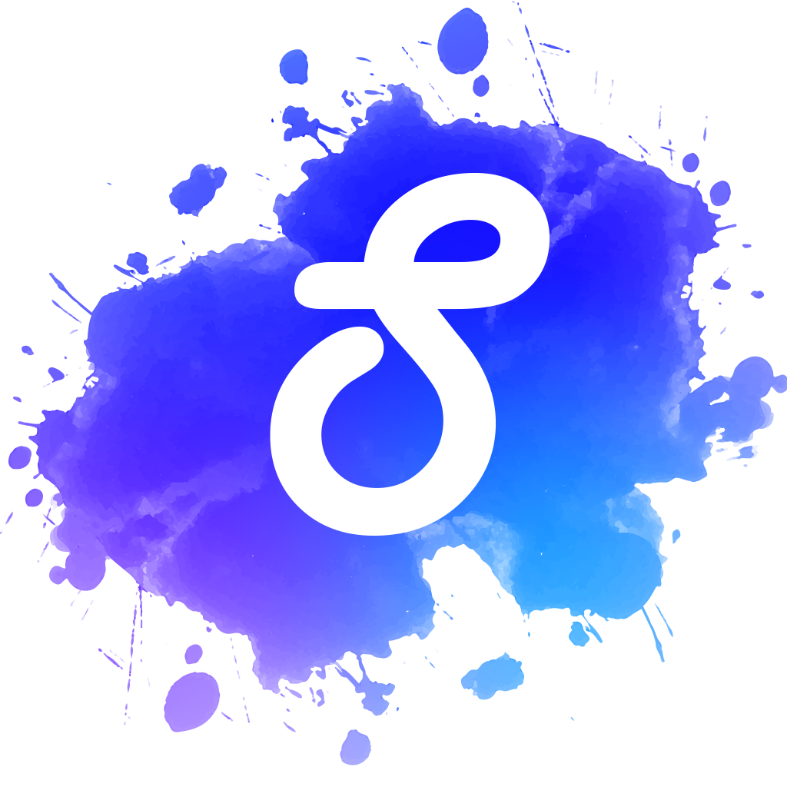

My Portfolio
My name is Kody Gordon, I am currently a student in the Epicodus program located in Portland, OR. This portfolio is meant to show the skills I have learned in this program.
About me
- Mom
- Dad
- Sister
- Brother
- PC Gaming - Like many in the Epicodus program I have a passion for anything Tech. I build my first PC at the age of 10.
- Friends - I've been very lucky to find some close friends over the years that I have, not only tech/gaming, in common with but they are all great people
- Reading - I am a huge bookworm. The Name of the Wind, Ready Player One, The Alchemist are a few of my favorites.
- I enjoy going out and socialising, when it's not the apocolypse
Work History
I've worked many jobs over the years, from restaraunt industry, tech help, and event planning my main focus has always been customer service. Here are a few of my most memorable
- Event Planner - From planning, setup, to execution I have done hundreds of events over the years.
- Sous Chef - Went to culinary school right after High School. After cooking for a couple years I
transitioned into event planning while still cooking for smaller events.
- Restaraunt Manager - Opened a restaraunt located in Vancouver, WA. Used tech background to also build and
maintain all systems used by restaraunt.
Family
Hobbies
Projects
Most of these projects can be considered works in progress.
 Practice project
Practice project- Slyde Social Media
 Projects made through Epicodus program.
Projects made through Epicodus program.
My own journey with Epicodus. A few short paths practiving HTML, CSS, JS, and Bootstrap.
A social media project that I built along with my bestfriend during covid. If you took Facebook, Reddit, and Instagram and combined them with a heavy focus on user privavy. That's Slyde